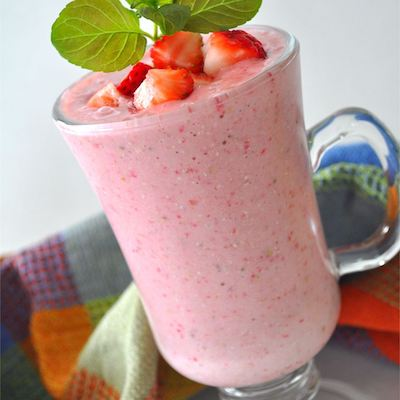

Strawberry Oatmeal Breakfast Smoothie

Description
Smoothies are a great way for someone
who does not have time to sit down and eat and need something to take on the go.
This smoothie has a creamy texture, which is great for anyone who
does not prefer a watery smoothie. This is also a very filling smoothie.
Ingredients
- 1 cup soy milk (or any other you prefer)
- 1/2 cup folled oats
- 1 banana, broken into chunks
- 14 frozen strawberries
- 1/2 teaspoon vanilla extract
- 1/2 tablespoon white sugar
Steps
- In a blender, combine soy milk, oats, banana and strawberries. Add vanilla and sugar if desired. Blend until smooth. Pour into glasses and serve.
Home Page